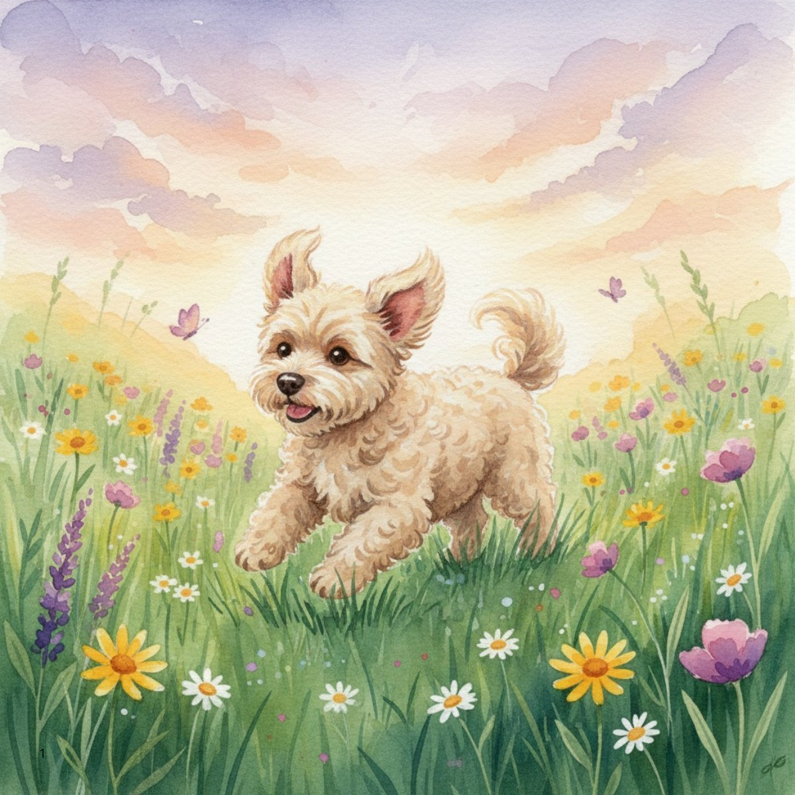
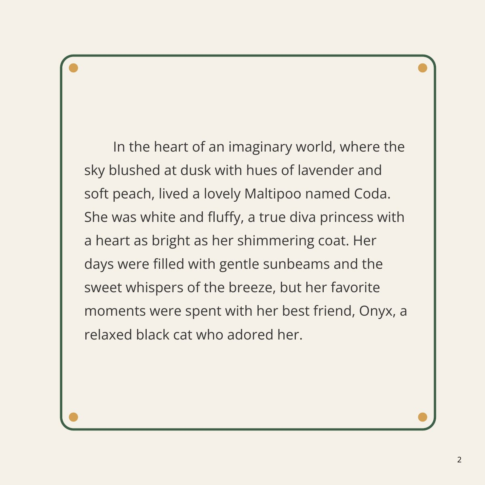
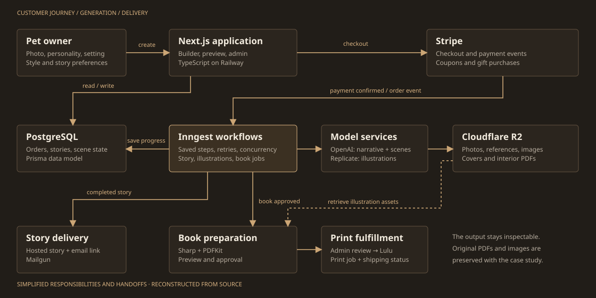
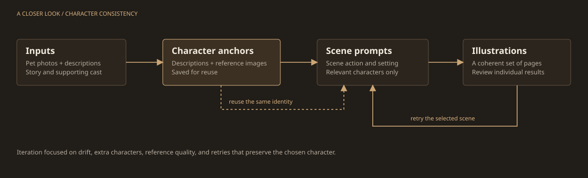

The same pet, page after page.
Extract character descriptions, build reference images, and carry those anchors into each scene. Later iterations tightened which characters could appear and varied retry prompts without losing the original identity.
Pet Protagonists / Independent product
A personalized storybook service that took a pet's personality and photo through writing, illustration, review, and print-ready book production. I built the product and the system behind it.

01 / The idea
Pet Protagonists started with an approachable idea: put someone's own pet at the center of a story. The name, the odd little habits, the recognizable face. Let the customer choose a setting and an illustration style, then turn it into a keepsake.
The interesting engineering question was how to make that experience repeatable. A paid order had to become a coherent story, a consistent set of characters, a usable preview, and a deliverable book. Each handoff added real product work.
That became the project: connecting creative generation to the practical details of payments, storage, retries, email, and printing.
02 / The result
This is Coda's Magical Twilight Adventure, created for the Youngs. The preserved PDF includes my dedication: “I know I enjoyed making it!” Browse the actual pages below, or open the complete print file.
24-page interior · December 2025 · Preserved original

Rendered directly from the original generated PDF, with its original credits and dedication preserved in the full file.
03 / The work
I worked across the customer-facing product and the systems that had to complete an order. The difficult parts showed up between steps.
Extract character descriptions, build reference images, and carry those anchors into each scene. Later iterations tightened which characters could appear and varied retry prompts without losing the original identity.
Story writing, scene extraction, illustration, storage, and delivery run through background workflows. Saved progress, bounded concurrency, retry limits, and order states make individual failures manageable.
Image processing and PDF layout had to account for trim, bleed, safe areas, page counts, and a wraparound cover. The printing workflow included preview, approval, an admin review step, and a Lulu integration.
Stripe checkout, gift flows, coupon handling, customer emails, analytics, an admin workshop, evaluation datasets, tracing, and a social-content pipeline all sit around the generation itself.
04 / The system
The application coordinated the customer journey. Background workflows carried work across model calls and failures. Database records held progress; object storage held the resulting images and print files.

Reconstructed from the application and workflow source. Simplified to show responsibilities and handoffs; this is a record of the built system.

05 / The iteration
The repository records a succession of concrete problems and improvements. This is the part of the build I want to preserve alongside the polished pages.
The first MVP joined story creation, checkout, email delivery, public story pages, analytics, and end-to-end test automation.
Character extraction and saved descriptions became part of scene generation. Model comparison work examined image quality, speed, and cost.
Book interiors, covers, print-safe layout, and debug versions were generated and revised. Coda's preserved book comes from this phase.
Reference-image handling, character descriptions, model updates, tracing, evaluation datasets, cover alignment, and selective retry behavior received further work.
A social-content workflow, an admin workshop, saved form progress, and improvements to the creation flow extended the work beyond generation.
Timeline based on repository history, implementation documents, and the preserved book files.
What I carry into the next build
This project brought product design, AI orchestration, payments, operational tooling, and physical output into one system. The useful evidence is here: a complete book, an inspectable architecture, and a record of iteration.
I like work that connects an ambitious idea to something people can actually use. If your problem needs that combination of curiosity, engineering, and follow-through, let's talk.